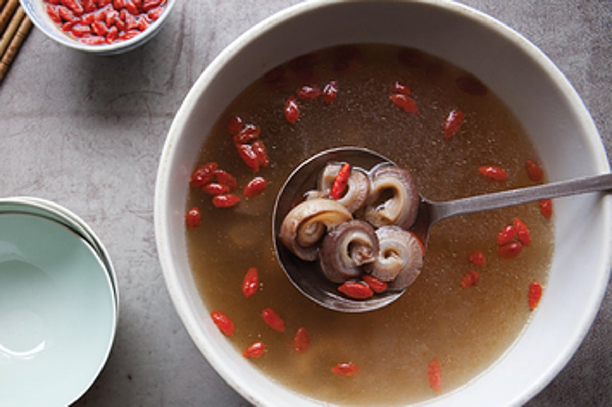

Dick Soup

Description
This dish is basically for when you've finally castrated all the men in your life for the crime of being born male (slay) and want to top off the event with a suitably theatrical dinner party.
(not actually edible)
Ingredients
- Uhhh, water I guess.
- Vegetables 'n' shit like what
- Salt?
- Severed penises. Peni? Penii?
- 27 shots of absinthe.
Steps
- So first off you've got the severed peniseses, right? Chop those bad boys up however you feel like. Cut 'em, rip 'em, smash 'em - who cares? Then slam 'em in a dish or something. Maybe a couldron if you have one.
- Then what you wanna do is add those 27 absinthe shots and water, I guess, if you're a coward.
- Maybe also some onions and stuff? Potatoes 'n' carrots 'n' shit like that. I'm not walking you through how to prepare those, read a different recipe for that.
- Heat it up, I guess. If you don't know how to work a stove you're too young to be following this recipe.
- Et voila! That shit probably rancid lmao. Serve it to those who've wronged you.